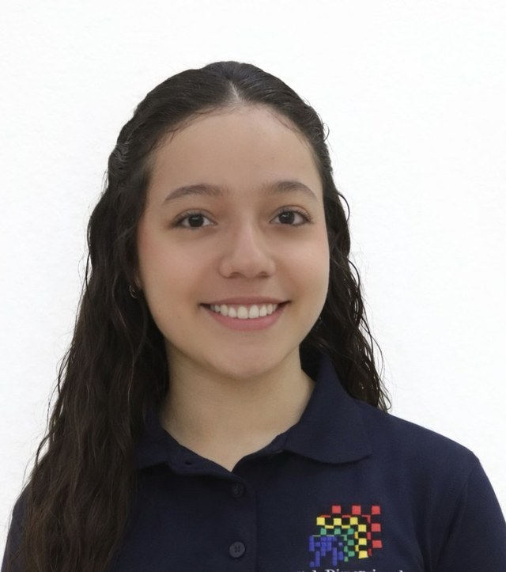

2023 — 2025
Teacher
Mochila Cantora Corporación Cultural
Artistic and musical education for children aged 2–18, including children on the autism spectrum.
Computer Science undergraduate researching computational imaging and inverse problems at the High Dimensional Signal Processing group, Universidad Industrial de Santander.

I work on reconstruction methods that stay reliable when the physics gets hard — photon-limited sensing, signal-dependent Poisson noise, and acquisition operators that break the usual Gaussian assumptions.
My current line of work asks how far frozen foundation-model representations can be pushed as priors inside unrolled solvers, so that reconstruction generalises across datasets and optical setups without clean ground truth and without expensive fine-tuning.
Universidad Industrial de Santander · Malmö, Sweden · September 2026
Poster Session 3 · Fri 11 Sept, 10:30–12:30 CEST · ExHall, board #50
An ADMM-inspired unrolled plug-and-play solver for Poisson inverse problems that decouples a closed-form data-consistency update from a parameter-efficient prior. The prior is a lightweight decoder over frozen CLIP RN50 dense multi-scale features, and self-supervision combines GR2R measurement-domain re-corruption with an equivariant-imaging regulariser over virtual acquisitions — so no clean ground truth is ever required.
@inproceedings{diazdelgado2026frozenclip,
title = {Frozen {CLIP} Priors for Robust Self-Supervised
Poisson Inverse Problems},
author = {Diaz-Delgado, Laura C. and Martinez, Emmanuel
and Arguello, Henry},
booktitle = {Proceedings of the European Conference on
Computer Vision (ECCV)},
year = {2026},
eprint = {2608.20524},
archivePrefix = {arXiv},
primaryClass = {eess.IV}
}
End-to-end optimisation of a low-cost near-infrared multispectral filter set jointly with the network that estimates the fermentation index of dried cocoa beans.
* Equal contribution
Distilling a high-sampling-ratio teacher into a student that reconstructs from far fewer single-pixel measurements, easing the trade-off between undersampling and optical sensor cost.
GPA 4.55 / 5.00 · Full merit scholarship (Generación E, Excelencia).
Local logistics and design of the conference's visual materials.
Art and emotional-wellness workshops for university administrative staff.
Artistic and musical education for children aged 2–18, including children on the autism spectrum.
First place, Festival Nacional Universitario de Coros y Ensambles Vocales (ASCUN). Soprano, UIS University Choir.
Full undergraduate scholarship for academic excellence. Colombian Government & ICETEX.
Coral Universitaria UIS.
Medals awarded by Instituto Santa Teresita.
I sing soprano in the UIS University Choir, named the best university choir in Colombia in 2024 and again in 2025. Music is not a side note to how I work — rehearsing a piece and debugging a reconstruction pipeline ask for the same thing: listening carefully, and being willing to start the passage again.
I also teach art and emotional-wellness workshops for university staff, and for two years taught artistic-musical education to children aged 2 to 18, including children on the autism spectrum.
I'm always glad to talk about computational imaging, inverse problems and self-supervised reconstruction — a question about the paper, a possible collaboration, or sharing code and data. Email reaches me fastest.